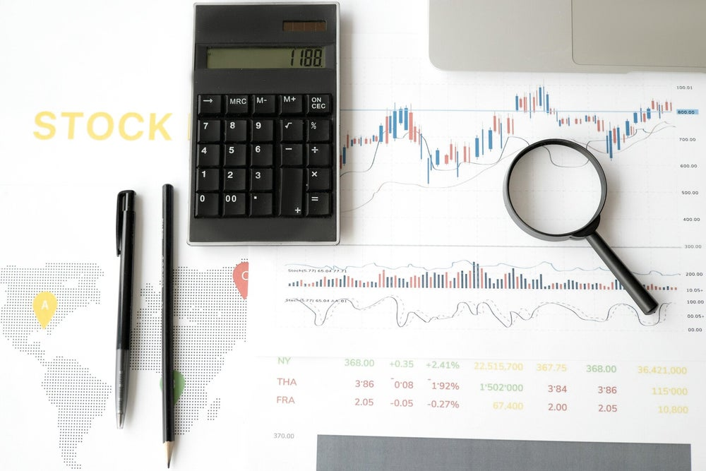

Geld voor onverwachte uitgaven
Een reparatie, een tegenvallende maand of een noodzakelijke vervanging vraagt om direct beschikbaar geld. De passende buffer hangt af van je huishouden en verplichtingen.
BELEGGEN & VERMOGEN
Een huis over een paar jaar, meer vrijheid om te werken of vermogen voor later: je doel bepaalt het vertrekpunt. Lees hoe we onze begeleiding willen vormgeven, met aandacht voor je buffer, tijdshorizon en risico’s.
We willen financiële keuzes begrijpelijk maken, zodat je weet wat je met je geld doet en waarom. Gebruik onze rekentools om je woon- en spaardoelen te verkennen en neem de uitkomst mee in je afweging.

Onze beoogde aanpak begint met je doelen, financiële ruimte en tijdshorizon. Beleggen is niet voor iedere situatie passend. De waarde kan dalen en je kunt een deel van je inleg verliezen.
Onze visie is dat financieel advies gaat over wat er morgen mogelijk wordt. Dat kan ook betekenen dat je eerst een buffer opbouwt of geld beschikbaar houdt voor een nabije aankoop. Een passend plan begint bij de vraag hoeveel onzekerheid je kunt én wilt dragen, zonder dat je dagelijkse leven of andere plannen onder druk komen te staan.
Lees onze afwegingen bij sparen of beleggen als je nog zoekt naar het verschil. Je hoeft niet vooraf te weten welke oplossing je wilt; juist je vragen en twijfels helpen om je doelen helder te krijgen.
Bekijk de kostenstatus van beleggingsadvies ↗OVERZICHT VOOR NU EN LATER
Een reparatie, een tegenvallende maand of een noodzakelijke vervanging vraagt om direct beschikbaar geld. De passende buffer hangt af van je huishouden en verplichtingen.
Wil je binnenkort een woning kopen, reizen of investeren in je onderneming? Kijk dan hoeveel geld beschikbaar moet blijven en hoe zeker de uitgaven zijn.
Bij doelen verder weg kun je onderzoeken of beleggen past bij je kennis, draagkracht en risicobereidheid. Een lange horizon neemt het risico op verlies niet weg.
Een nieuwe baan, samenwonen of gezinsuitbreiding kan je prioriteiten veranderen. Leg vast wanneer je je plan opnieuw bekijkt en wat aanleiding is om het aan te passen.
Deze indeling helpt om doelen uit elkaar te houden. Ze is geen persoonlijke verdeling van je vermogen. Via de rekentools kun je je spaardoel verkennen; in een vrijblijvende kennismaking kun je bespreken welke vragen daarna overblijven.
Wanneer heb je het geld nodig en welke buffer moet beschikbaar blijven?
We willen advies-, product- en doorlopende kosten apart bekijken, naast de spreiding van risico.
Kennis, ervaring, verliesdraagkracht en bereidheid om risico te nemen moeten bij een oplossing passen.
We willen vastleggen welke activiteiten en sectoren je wilt meenemen of vermijden, en op basis van welke productinformatie.
Bij een eventuele selectie moeten duurzaamheidskenmerken aantoonbaar uit beleid en productinformatie blijken. Een groene naam of uitsluiting alleen is geen onderbouwing. Rendement, risico, kosten en je persoonlijke voorkeuren moeten samen worden afgewogen.
Duurzaamheid begint voor ons bij vragen stellen: welke activiteiten wil je ondersteunen, wat wil je vermijden en welke informatie vind je daarvoor overtuigend? Een duurzame keuze is niet automatisch zonder risico en geeft geen garantie op een bepaald rendement. Lees hoe duurzaamheid en onze waarden samenkomen.
Het huisfonds uit onze positionering is een ontwikkelidee. Er is op deze website geen beschikbaar fonds, portefeuilleaanbod of inschrijfmogelijkheid. Fondsbeleid, organisatie, vereiste bevoegdheden, kosten en productinformatie zijn nog niet als operationeel aanbod vastgesteld.
Er worden geen rendementen, garanties of concrete duurzaamheidskwalificaties voor dit fonds geclaimd.
We willen dat je een financieel plan kunt begrijpen en later opnieuw kunt beoordelen. De onderstaande stappen laten zien hoe die begeleiding is bedoeld. Voor een eventuele betaalde opdracht moeten de werkzaamheden en de bijbehorende kosten eerst duidelijk zijn.